RJ Tasks for Students walkthrough
See what's due, what's missing and what to do first, right inside Canvas. Click any picture to see it bigger.
1. Find it
Open your Canvas Dashboard
RJ Tasks for Students should already be on your school laptop, so you don't install anything. On the Dashboard it sits on the right side of the page.
Tip: Canvas's own To Do list is still there, right below it.
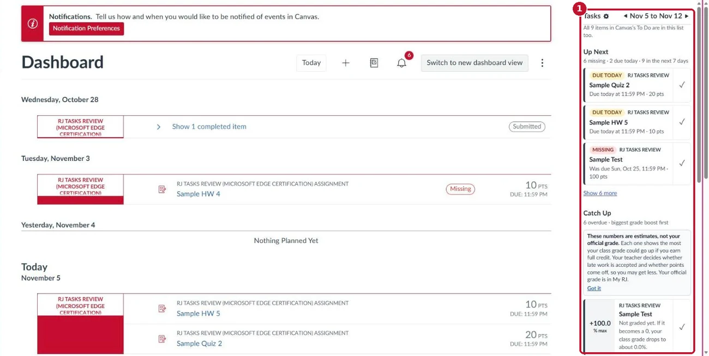
On other pages, click My Work
Some Canvas pages have no room on the right, like Calendar and Grades. Look in the bottom-right corner for the My Work button.
The red number is how much is missing or due today.
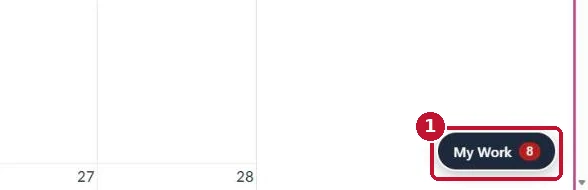
My Work opens on the right
Your list slides in from the right. Click the X at the top to close it.
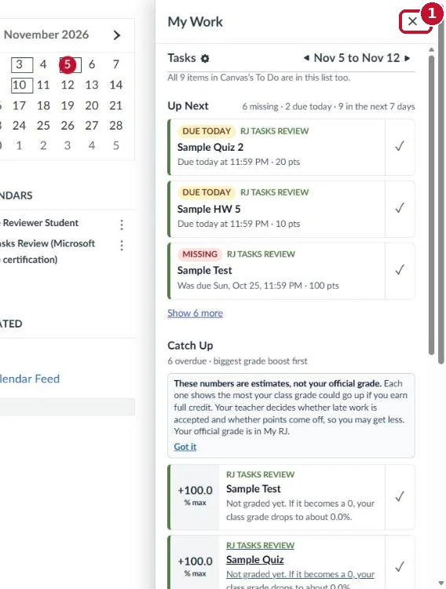
Inside a class, it shows only that class
Open any class home page. The list now shows just that class's work.
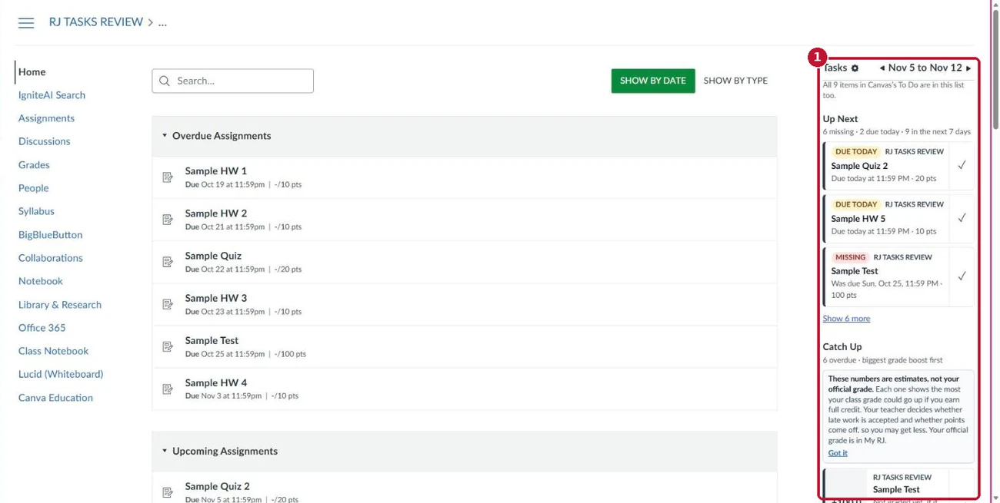


2. Use it every day
Start with Up Next
These are the first things to do.
- 1 The label says why: Due today, Missing, Tomorrow or This week. Due today comes first, while you can still turn it in on time. Missing work comes next, with the one that could raise your grade most first.
- 2 Click the ✓ when it's done. It's also marked done in Canvas's planner.
- 3 Show more lists the rest.
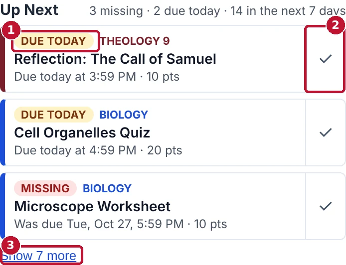
Sample classes and made-up assignments. Use Catch Up when you're behind
All your overdue work, with what could help your grade most at the top, and how much each one could raise it.
- 1 +12.5% max is the most your class grade could rise with full credit (100% on that assignment).
- 2 Got it hides the explanation once you've read it.
- 3 Click the ✓ when it's done.
These are estimates. RJ Tasks can't see late penalties: your teacher decides whether late work is accepted and whether points come off. Your official grade is in My RJ.
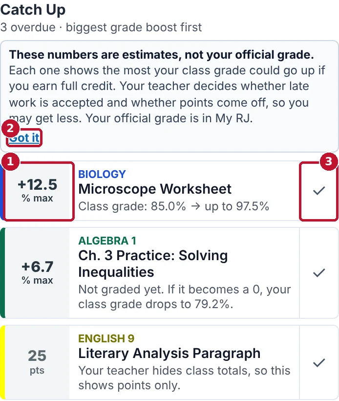
Sample classes and made-up assignments. Check Week at a glance
How many things are due each of the next 7 days. A red line marks a busy day, so you can start early.
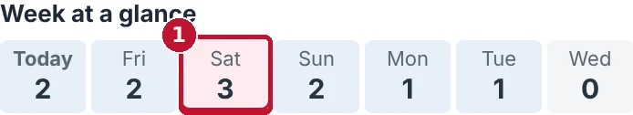
Sample classes and made-up assignments. See your semester GPA estimate
- 1 Your estimate for this semester only. It is not your official GPA.
- 2 Details shows each class.
- 3 Hide puts it away. Click Show semester GPA to bring it back.
Official GPA: click My RJ, then your photo, Profile, Performance.
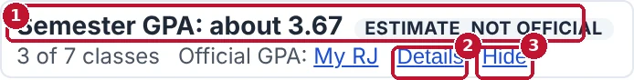
Sample classes and made-up assignments. Open Details to see each class
It shows each class's percent, letter and points, and marks AP classes. A class is left out if it has no grade yet or the teacher hides totals.
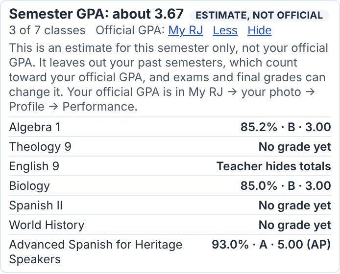
Sample classes and made-up assignments. See your progress for the week
Scroll down for one ring per class. A ring fills as you finish that class's work. Use All Courses above the rings to see one class. Don't want them? Click the gear next to Tasks and turn off Progress rings for each class.
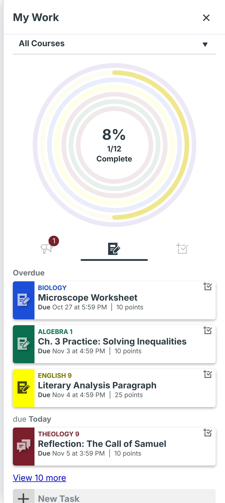
Sample classes and made-up assignments. Scroll down for the full list
Below the rings is everything due, missing work and announcements. Click New Task to add your own to-do.
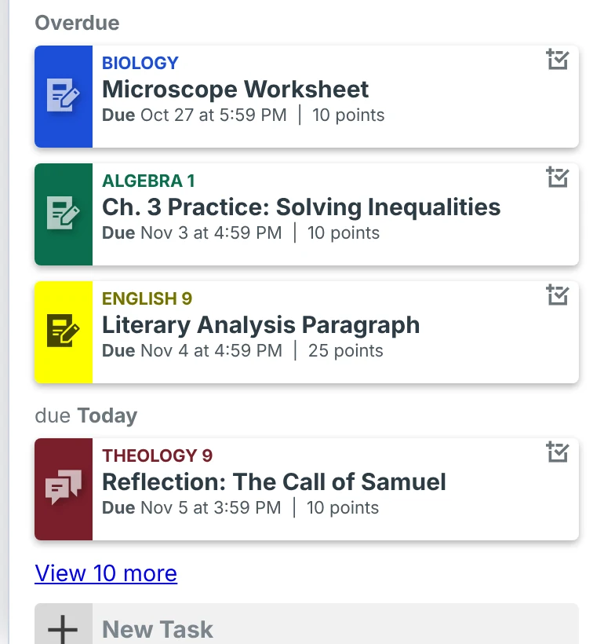
Sample classes and made-up assignments. Compare with Canvas's To Do
This line at the top tells you whether everything in Canvas's own To Do is in this list too. If it says something is missing, trust Canvas and tell Ed Tech.
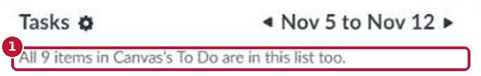


3. Make it yours
Click the gear next to Tasks
Settings opens in a new tab. Changes save on their own, so there's no Save button. Click Close when you're done.
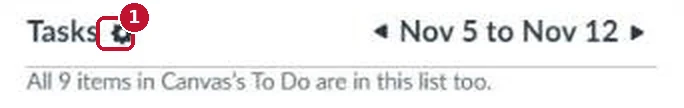
Choose what shows, and in what order
Under What to show, uncheck anything you don't want. Use the ↑ ↓ arrows to change the order. Reset order puts it back.
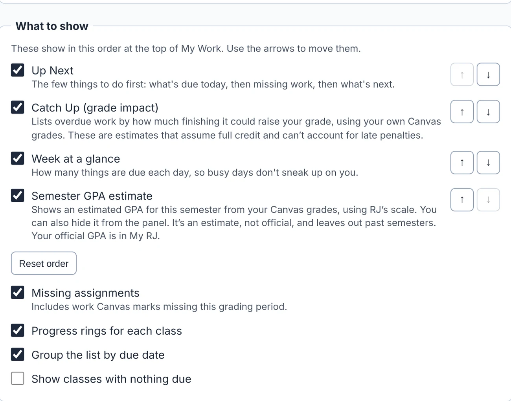
Turn on dark mode
Check Dark mode for Canvas. Canvas turns dark, and images and videos stay as they were made. Quizzes stay light so nothing gets missed.
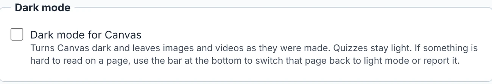
If a dark page is hard to read
Use the bar at the bottom of the page: Show this page in light mode fixes that page right away. Report it tells Ed Tech.
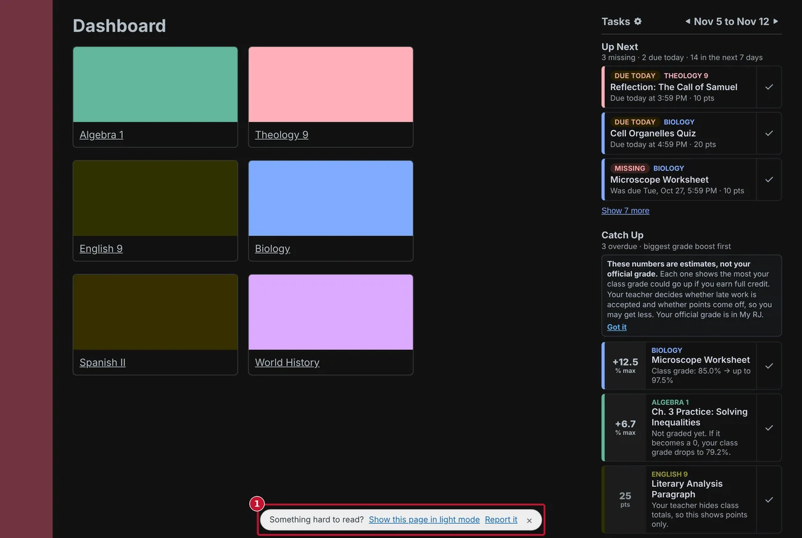
Sample classes and made-up assignments.


Need help?
- Something looks wrong: reload the page, then restart Edge.
- Still wrong, or you have an idea: use the RJ Tasks bug report and idea form. RJ sign-in required.
- Planning around practice or work: Plan your week with Outlook.